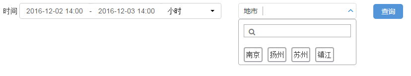
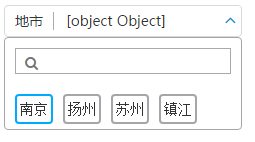

本小节将完成 my_first_app 的条件查询栏剩余部分，通过本小结的学习，你将了解到
BA告诉我们，这个功能的查询条件除了时间段以外，还有一个地市选择框。当然我们还需要有一个查询按钮可以触发一次查询。
Ux团队要求我们把时段框，地市框，查询按钮这3个控件放在一行上，并且地市框是一个下拉框，因此我们需要将这3个东西放在一个div里头。
编辑 app/my_first_app/web/index.html 文件，把body节点修改为：
<body ng-controller='rdk_ctrl' class="rdk_main">
<div>
<rdk_time range setting="timeSetting"></rdk_time>
<rdk_combo_select caption="'地市'">
<rdk_basic_selector data="citys" multiple_select="true" label_field="name" track_item_by="id" editable="false">
</rdk_basic_selector>
</rdk_combo_select>
</div>
<!-- 在页面渲染完成之前，显示在界面上，防止页面抖动 -->
<!-- 这个节点可选，删除后，RDK会自动生成一个 -->
<!-- 这个节点只支持基本HTML标签 -->
<rdk_loading>
<img src="images/loding.gif" alt="loading..."/>
</rdk_loading>
</body>
页面其他部分保持不变。我们碰到两个新的控件，分别是 ComboSelect 和 BasicSelector，在页面上引用之后，还需要注入对他们的依赖才能生效，参考这里。
编辑 app/my_first_app/web/scripts/main.js，增加ComboSelect和BasicSelector这两个控件的依赖，具体操作方法和上一步类似，修改后的代码为：
define('main', ['application', 'utils', 'i18n', 'blockUI',
'rd.controls.Time', 'rd.controls.ComboSelect', 'rd.controls.BasicSelector'],
function(application, utils, i18n) {
// 创建一个RDK的应用
var app = angular.module("rdk_app", ['rd.core', 'blockUI',
'rd.controls.Time', 'rd.controls.ComboSelect', 'rd.controls.BasicSelector']);
...
});
scope.citys = [
{id: 1, name: '南京'},
{id: 2, name: '扬州'},
{id: 3, name: '苏州'},
{id: 4, name: '镇江'},
]
注意
一般来说，地市的备选项是需要从服务端查询得到的，这里为了调试界面能够正常显示，直接写死，这个问题留在后续步骤解决。
我们直接使用bootstrap风格的按钮即可。编辑 app/my_first_app/web/index.html 文件，在div的最后追加上下面这行代码
<button type="button" class="btn btn-primary">查询</button>
保存后刷新浏览器，我们就得到一个简单的查询条件栏了，此时页面看起应该是这样的 
此时刷新页面后，选中任意一个地市，地市框显示异常：

这是ComboSelect控件不识别我们地市的数据结构导致的，需要增加一个属性告诉ComboSelect控件如何识别一个地市。
修改页面代码，找到 rdk_combo_select 节点，添加一个新的属性，代码为：
child_change="selected2string"
child_change 的值是一个 名为 selected2string 的函数，我们需要将它定义在scope对象上。编辑js脚本，添加上 selected2string 的定义，代码为：
scope.selected2string = function(selected, context, index) {
var selectedCitys = '';
angular.forEach(selected, function(city) {
selectedCitys += city.name + ' ';
});
return selectedCitys;
}
扩展：
angular.forEach是angular提供的一个遍历函数，很有用，访问这里可以了解更多。站点 http://docs.ngnice.com/api 提供了AngularJS所有文档，建议仔细阅读。
看起来条件框中所有的元素都挤在一起，我们可以增加一些留白，让每个控件看起来更独立一些。为了简单，我们直接使用style属性，你也可以在css文件中定义样式。
给时间控件和ComboSelect控件增加一个这样的属性 style="margin-right:30px"
我们完成了查询条件栏的剩余部分，碰到了两个新的RDK控件：ComboSelect和BasicSelector